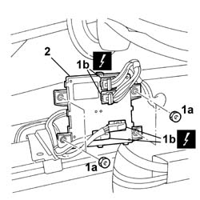

5505A48 CONTROL UNIT (digital network) in luggage compartment - R.R.
- Path
- Procedures > 55 ELECTRICAL EQUIPMENT > 5505 INSTRUMENT/GAUGE ELECTRICAL CIRCUITS > 5505A multi-function components > 5505A48 CONTROL UNIT (digital network) in luggage compartment - R.R.
- Kind
- repair procedure (removal / refitting; the operation number is the code)
- Applies to
- all engines; all production periods
- Interactive page
- https://sloeber94.github.io/elrnDB-lThss/en/#/376035
Applies to: all engines; all production periods
 Removing
Removing
 Refitting
RefittingSee in Op. 7040B10 LOAD CARRYING COMPARTMENT LINING - R.R.
See in Op. 7040B12 Luggage compartment/load platform left SIDE LINING - R.R.
- Disconnect the negative battery terminal.
1. Undo the fixing nuts (1a) and disconnect the electrical connections (1b).
 | Description | Connector |
|---|---|---|
1b | Luggage compartment control unit (NVB) | M063A |
| Description | Connector |
|---|---|---|
1b | Luggage compartment control unit (NVB) | M063B |
| Description | Connector |
|---|---|---|
1b | Luggage compartment control unit (NVB) | M063D |
| Description | Connector |
|---|---|---|
1b | Luggage compartment control unit (NVB) | M063C |
2. Remove the digital network control unit.

Applies to: all engines; all production periods
Refitting
Removing- Place the control unit in its housing.
- Tighten the retaining nuts.
- Connect the electrical connections.
| Description | Connector |
|---|---|---|
. | Luggage compartment control unit (NVB) | M063A |
| Description | Connector |
|---|---|---|
. | Luggage compartment control unit (NVB) | M063B |
| Description | Connector |
|---|---|---|
. | Luggage compartment control unit (NVB) | M063D |
| Description | Connector |
|---|---|---|
. | Luggage compartment control unit (NVB) | M063C |
- Connect the negative battery terminal.
See in Op. 7040B12 Luggage compartment/load platform left SIDE LINING - R.R.
Topics linked from this page (2)
- 7040B10 LOAD CARRYING COMPARTMENT LINING - R.R.
- 7040B12 Luggage compartment/load platform left SIDE LINING - R.R.